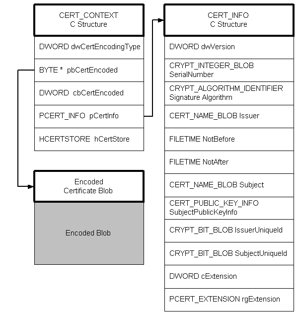
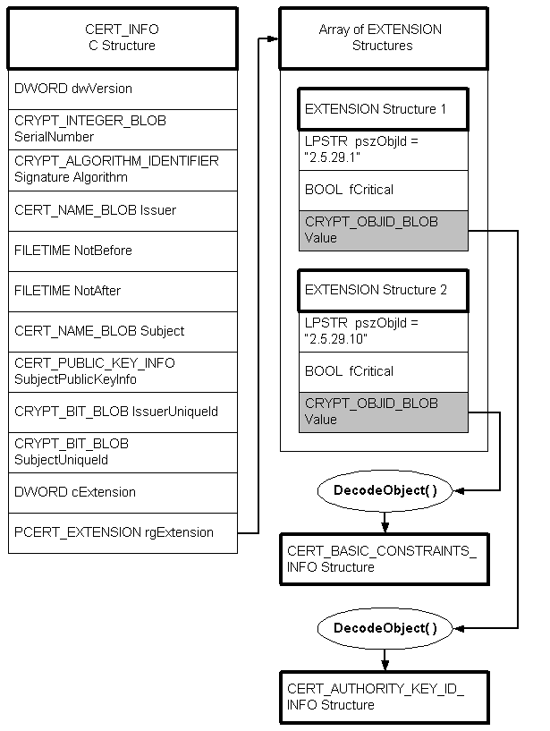

Given a certificate, the first step in decoding the certificate BLOB is to call CertCreateCertificateContext, passing it a pointer to the encoded certificate (BLOB). When this function is called, it creates a duplicate of the encoded certificate, creates a structure of type CERT_CONTEXT, and creates a structure of type CERT_INFO. As shown in the following illustration, a certificate context includes the original certificate BLOB, a C structure of type CERT_CONTEXT, and a C structure of type CERT_INFO. One of the members of the CERT_CONTEXT structure points to the CERT_INFO structure and another to the encoded certificate BLOB.

The encoded object (data member) is always provided as the input to the CryptDecodeObject function, and the output is a C structure that may or may not have encoded members, depending on how far into the process you are.
There is one other member that requires some decoding, and that is the Extension member. Although it is not encoded at the CERT_INFO level, it does contain some encoded information. To decode this information, proceed as shown in the following illustration.

In the CERT_INFO structure, member rgExtension is a pointer to an array of CERT_EXTENSION structures. Each CERT_EXTENSION structure has a Value member that is in encoded form and needs to be decoded. The Value member is passed to the CryptDecodeObject function, and then the output from the function depends on the value of the pszObjId member. Notice that in the illustration, two different structures are produced, one of type CERT_BASIC_CONSTRAINTS_INFO and one of type CERT_AUTHORITY_KEY_ID_INFO, depending on the value of pszObjId.
Â
Â